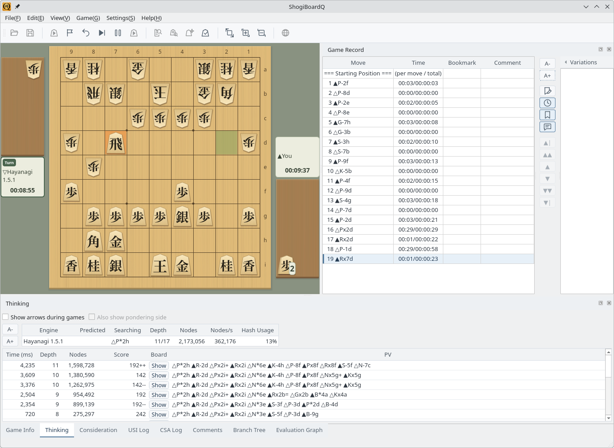
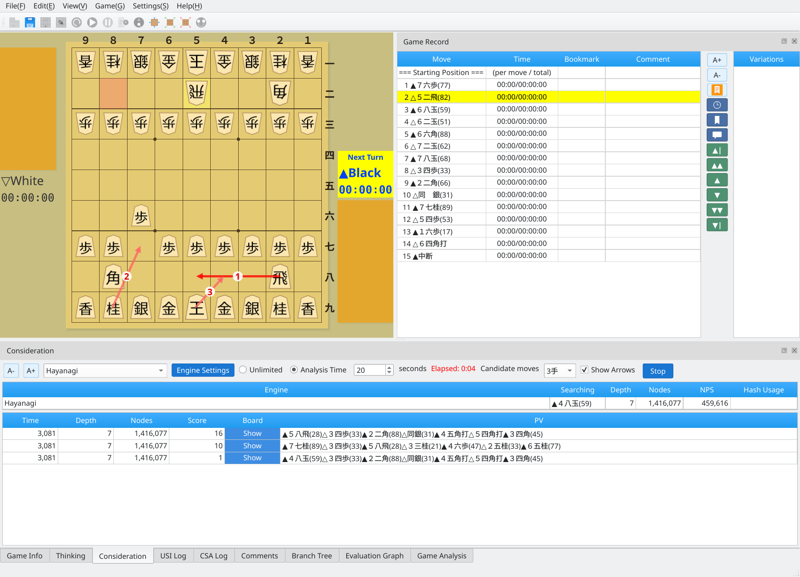
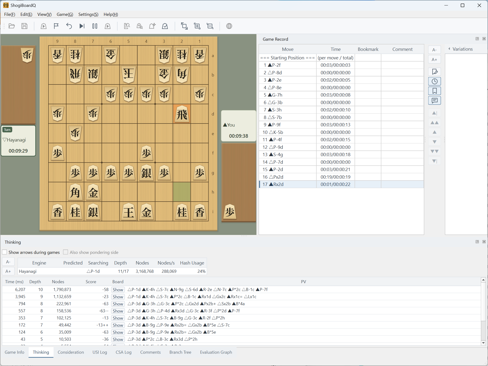

One Qt6 codebase supports Linux, macOS, and Windows
The Linux and Windows screenshots were captured with the English interface.
Runs natively on Linux
ShogiBoardQ running on Linux. It works on major desktop environments such as KDE Plasma and GNOME. The screenshot shows a game against the Hayanagi engine on KDE Plasma.

Linux: a game on KDE Plasma while Hayanagi is thinking (English interface)
ShogiBoardQ-linux.zip on GitHub Releases contains the AppImage, the tsume shogi collections (3- to 13-move mates, 6,000 problems in total), and the Hayanagi engine. After you extract the ZIP, the collections and Hayanagi are ready to select. The package is for x86_64 Linux.
To build from source or create the package, see Linux Build and Release.
Runs natively on macOS
ShogiBoardQ also runs on macOS. The Linux screenshot below illustrates the shared English interface; it was captured on Linux.

Common interface example — captured on Linux
Runs natively on Windows
ShogiBoardQ running on Windows. The screenshot shows a game against the Hayanagi engine on Windows 11.

Windows: a game on Windows 11 while Hayanagi is thinking (English interface)
The Qt6 framework enables support for multiple operating systems
ShogiBoardQ is built with Qt6 and C++17. Qt6's cross-platform capabilities let you build applications for Linux, macOS, and Windows from the same source code.
ShogiBoardQ uses Qt6's Fusion widget style to provide a consistent interface across platforms.
Install Qt6 and CMake on your OS, then build from source, including the Hayanagi submodule.
For setup, build commands, and distribution packages, see the Linux, Windows, and macOS build and release guides.